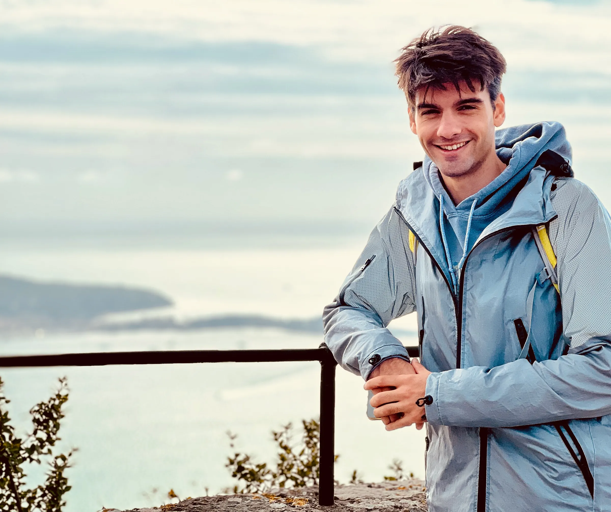
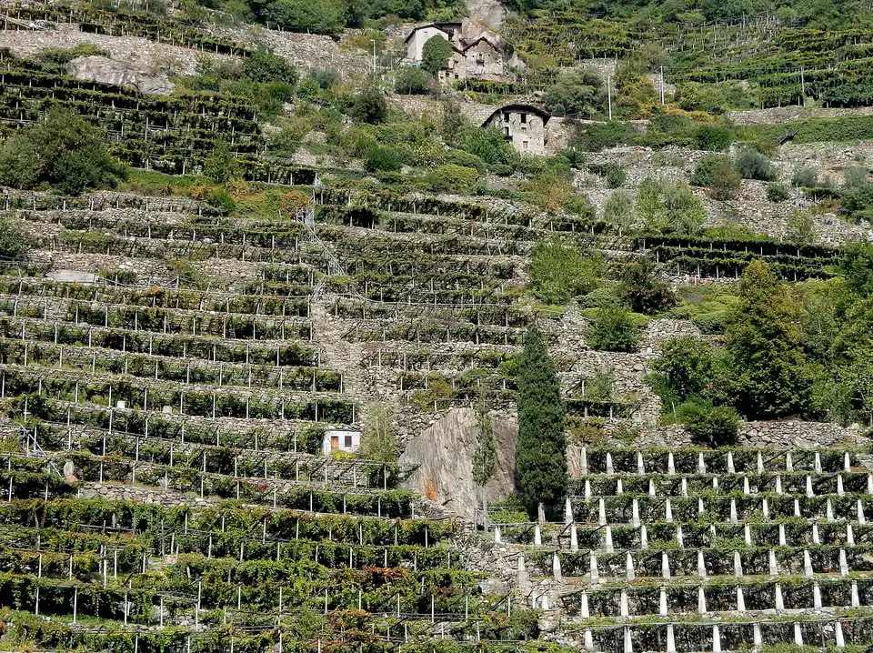
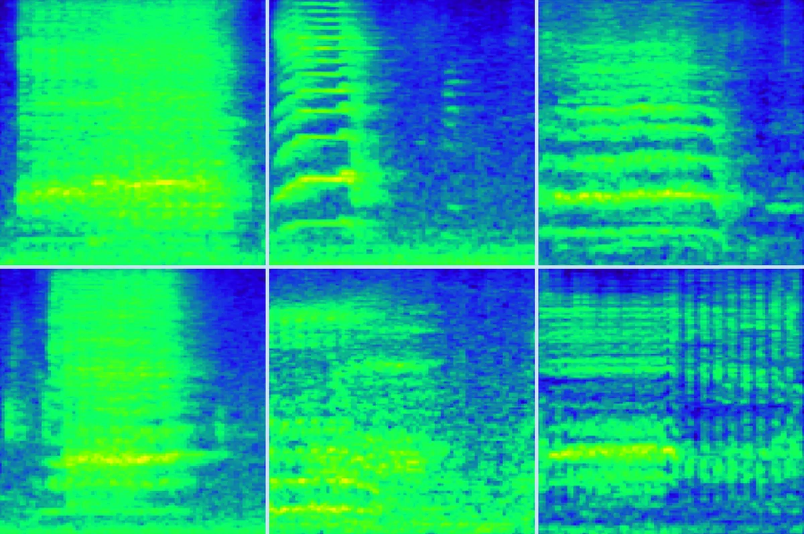
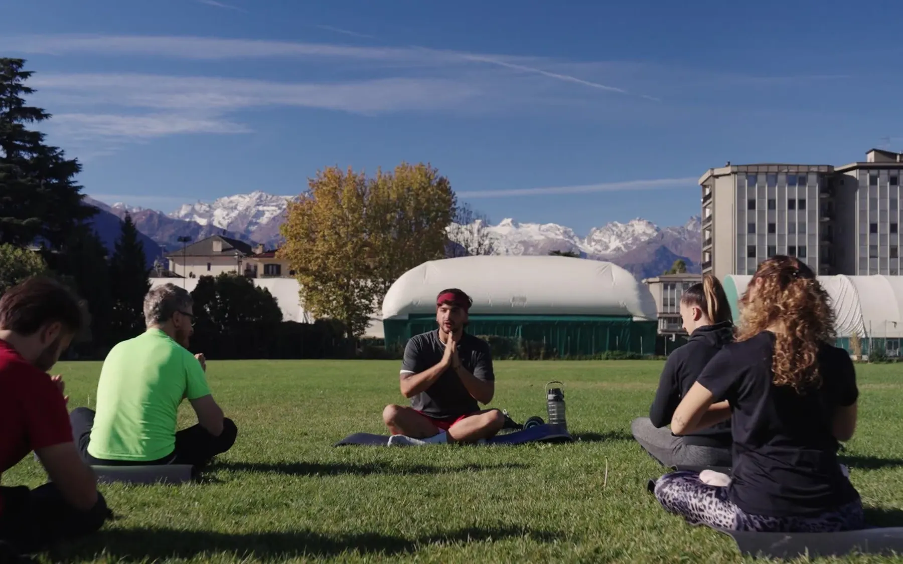
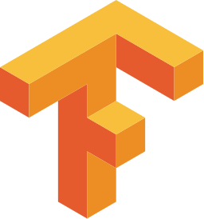
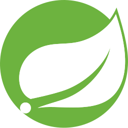

Gabriele Pesando-Gamacchio
Ricerca in intelligenza artificiale applicata, ad Aosta dal 2026: modelli che tolgono lavoro ripetitivo alle aziende.
Cosa faccio per le aziende
Cerco nei processi di un'azienda il lavoro ripetitivo che un modello può fare: leggere documenti, riconoscere difetti nelle immagini, classificare suoni e segnali. Il risultato è un modello che lavora ogni giorno, non una demo.
Progetti. Visione artificiale, audio e video.
-
e-RO.Alps, un rover per i vigneti della Valle d'Aosta
All'Institut Agricole Régional curo la visione artificiale di un rover elettrico per la viticoltura eroica, finanziato dal Bando Ricerca 2025 della Valle d'Aosta.

-
I versi delle capre, classificati al 95,8%
Una rete convoluzionale riconosce otto contesti dai versi e mostra quali frequenze ha usato per decidere. Pubblicato su PLOS ONE nel 2025.

-
Un giorno da, 5 episodi sul lavoro
L'ho fondata con Carlo Giordano e Riccardo Fiou: ogni episodio segue un mestiere per un giorno intero in Valle d'Aosta. Curo testi e parte tecnica.

Esperienza. Ricerca, software e didattica dal 2021.
- Ricerca in informatica, Institut Agricole Régional
Visione artificiale per il rover di e-RO.Alps, ad Aosta.
2026 – oggi - Software engineer per Amadeus
Con Alten Technologies a Sophia Antipolis: microservizi Java cloud-native.
2024 – 2026 - Tesi al Laboratorio di Informatica Musicale
Classificazione spiegabile di audio, poi l'articolo su PLOS ONE.
2023 – 2024 - Docente di informatica, Istituto Mosè Bianchi
Tre mesi di lezioni a Monza, dal codice binario alla sicurezza.
2023 - Software engineer, Relatech
Interfacce React e API Java Spring Boot per software di macchinari.
2021 - Laurea magistrale, Università degli Studi di Milano
Indirizzo machine learning; triennale in informatica per l'audio nel 2022.
2024
 Python
Python PyTorch
PyTorch
TensorFlow Hugging Face
Hugging Face Java
Java
Spring React
React GitHub
GitHub
Metodo di lavoro. Dal processo di oggi a un modello in uso.
1 Studio il processo
Affianco chi lo fa oggi e misuro dove si perdono ore e dove nascono gli errori.
2 Provo un modello sui vostri dati
Un prototipo su dati reali dice se l'automazione regge, prima di investire.
3 Lo metto in produzione
Integro il modello negli strumenti che usate già e ne controllo i risultati nel tempo.